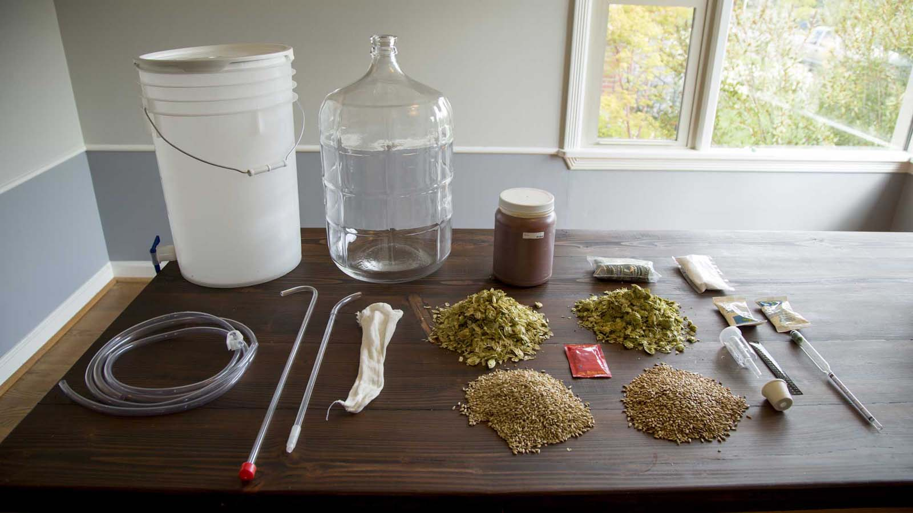

<section id="equipment" class="primary equipment light-text">
  <h3 class="section-hed">Tools of the trade</h3>
  <div class="read-more">
    Read more: <a href="http://www.seattletimes.com/?p=9610974">detailed information and places to buy brewing equipment</a>
  </div>
  <div class="image-container">
    
    <% csv.tools.forEach(function(row) { %>
    <div 
      class="zone"
      style="top: <%= row.y %>%; left: <%= row.x %>%"
    >
      <input class="radio" type="radio" name="equipment" id="close-button">
      <input class="radio" type="radio" name="equipment" id="equipment-<%= row.index + row.variant %>">
      <label for="equipment-<%= row.index + row.variant %>">
        <div class="numeral"><%= row.index %></div>
        <div class="content <%= row.x > 50 ? "right" : "left" %>">
          <div class="title"><%= row.index %>. <%= row.title %></div>
          <div class="description"><%= row.description %></div>
          <label class="close-button" for="close-button">[close]</label>
        </div>
      </label>
    </div>
    <% }); %>
  </div>
  <ol class="mobile-list">
    <% csv.tools.forEach(function(row) { %>
    <% if (row.variant == "b") return; %>
    <li> <%= row.title %> <div class="description"><%= row.description %></div>
    <% }); %>
  </ol>
</section>